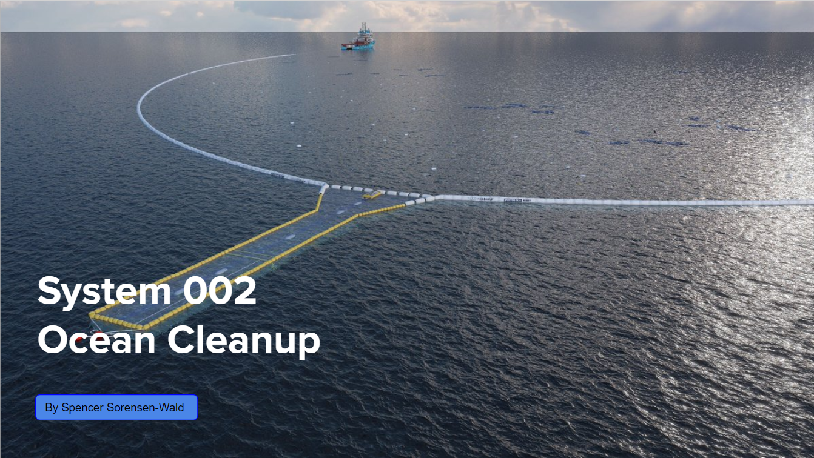

This is my AP Performance Task project.

This project was made for the APCSP AP test. The point of this code is to create a random quiz on Polyatomic IOns and report back a % correct at the end. To do this project I had to learn how to implement all the requirments into my code and come up with this idea. I learned how to make a useful coding project which I can now use to help myself study for future Chemistry tests.
This is my computing innovation project
For this APCSP project I chose to research The Ocean Cleanup. They just made a new tool for cleaning up plastic in the Great Pacific Garbage Patch and it uses data to find where the garbage is at any time. It took them a while but now they know how the patch moves and what it is made up of which will really help their efforts of cleaning it up. I had to do a lot of research to do this project and look at a lot of different inventions to choose the one I wanted to focus on. I learned a lot about data and its uses in this project but also about how people are attempting to cause change in the world and save the planet.